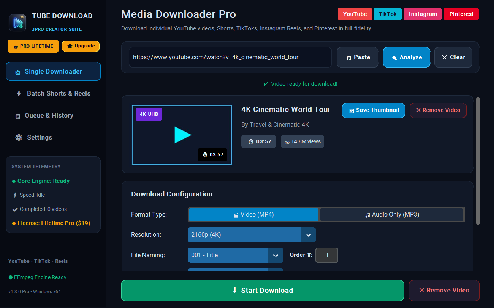
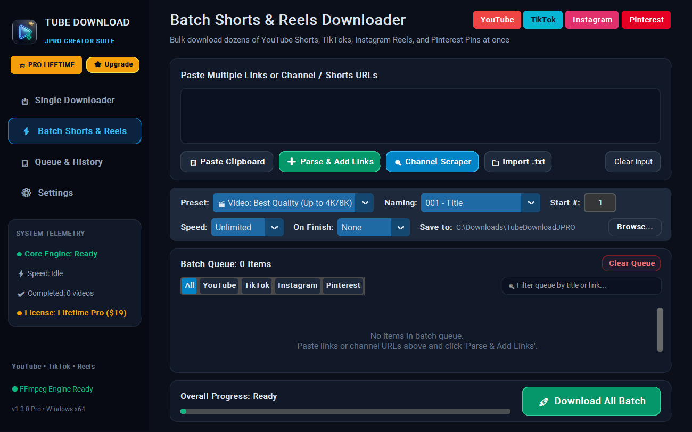
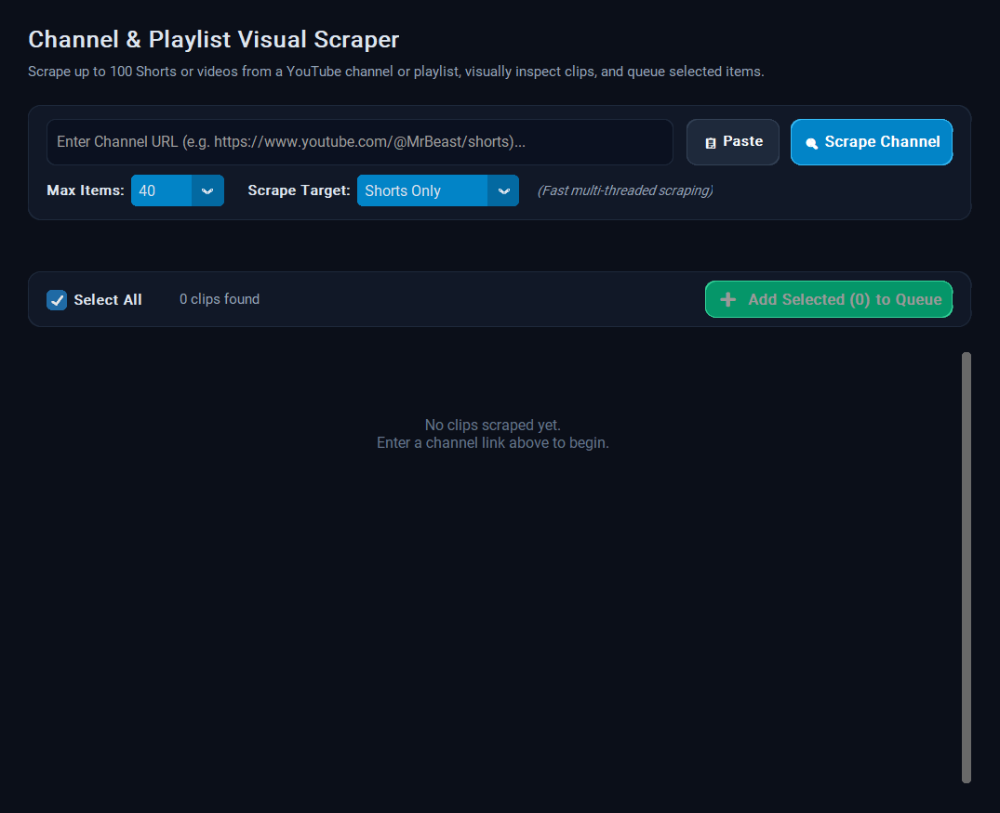
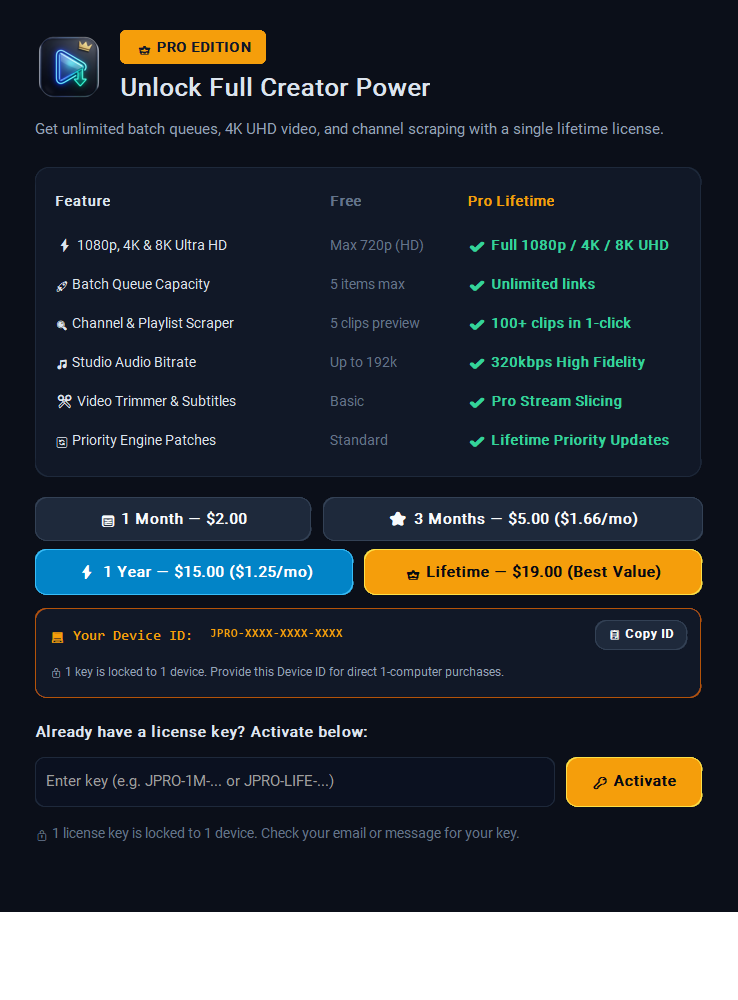
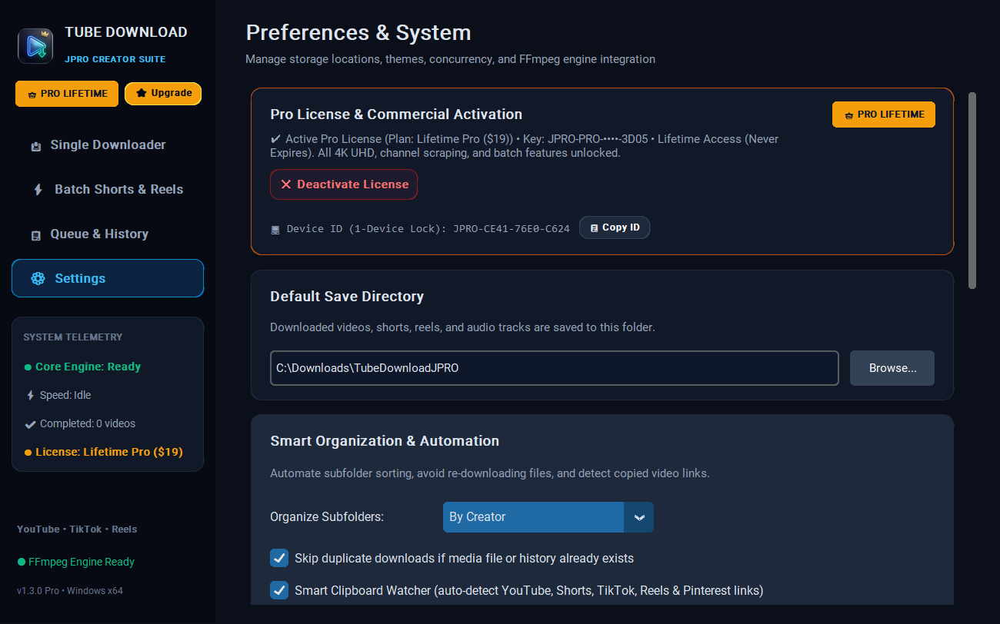

The ultra-fast desktop downloader built for creators, editors, and archivists. Save YouTube, TikTok (no watermark), Instagram Reels, and Pinterest in original master quality.

Experience frictionless media downloading with our high-throughput multithreaded engine and sleek cyber-glass interface.
Download native 2160p (4K) and 4320p (8K) streams with HDR and 60 FPS directly from YouTube without re-encoding or fidelity loss.
Paste dozens of URLs at once. Tube Download JPRO auto-indexes them, detects platforms, and downloads them in parallel sequence with live speed telemetry.
Enter any YouTube channel, playlist, or TikTok account. Scrape up to 100 clips in seconds with visual thumbnails, view counts, and select-all queues.
Extract crystal-clear audio from music videos, podcasts, and sound clips. Automatic ID3 metadata tagging and album art embedding included.
Only need 30 seconds of a 2-hour podcast? Set start and end timestamps (`00:15` to `01:45`) to download only the exact sliced segment without wasting data.
Download uncompressed Pinterest photo pins and video clips directly from source CDNs. Auto-convert between JPG, PNG, and WebP, or extract video cover art in 1 click.
Auto-sort downloads by creator or platform, cap bandwidth speeds, and configure post-batch power actions to sleep or shut down your PC after overnight queues.
Powered by our custom 3D Glassmorphic Crowned Neon UI — zero clutter, razor-sharp dark mode, and seamless workflow control.
Instant metadata preview, 4K resolution picker, Video/Audio/Image modes, timestamp trimmer, and subtitle burner.

Bulk import dozens of links, order numbering, custom folder routing, and power actions.

Interactive card grid with thumbnails, durations, and 1-click bulk import into your batch queue.

Hardware-locked security, real-time feature unlocking, and flexible subscription tiers.

Auto-detect yt-dlp extraction patches, duplicate auto-skipping, and subfolder sorting.
Instant digital license key delivered directly to your inbox. Activate in 5 seconds.
Perfect for quick client projects or short-term content creation.
Great balance for seasonal creators and active social media managers.
For serious editors and agencies needing year-round media archiving.
One single payment. Lifetime ownership and permanent engine updates.
We believe you will love Tube Download JPRO. If the software does not perform as expected on your Windows system, contact our support team within 14 days for a full, hassle-free refund.
See exactly what unlocks when upgrading to Tube Download JPRO.
| Capability / Feature | Free Edition | 👑 Pro Edition |
|---|---|---|
| Maximum Video Resolution | 720p (HD) | ✔ 1080p (Full HD), 4K & 8K Ultra HD |
| Batch Queue Capacity | 5 items max per batch | ✔ Unlimited bulk items |
| Channel & Playlist Scraper | 5 clips preview | ✔ Scrape 100+ clips in 1 click |
| Audio Bitrate (MP3) | 192kbps Standard | ✔ 320kbps High Fidelity Studio |
| Watermark-Free TikTok & Reels | ✔ Supported | ✔ Supported (Original Master) |
| Pinterest & HD Photo Downloads | ✔ Original HD Images & 720p Video | ✔ Original HD Images & 4K/1080p Video + Batch |
| Video Range Trimmer | ✔ Supported | ✔ High-Precision Keyframe Slicing |
| Engine Auto-Updates | Standard | ✔ Priority PyPI Extraction Patches |
| Device Support | Unlimited Free Devices | 1 Hardware-Locked PC |
Clean, standalone portable release. No adware, no spyware, no installers required.
Windows 10 / 11 64-bit • Standalone Portable Package (.zip)
⬇ Download Free Edition (Portable .zip)